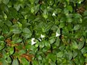
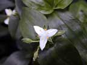
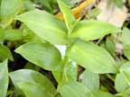
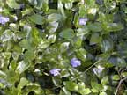

Wandering jew
Tradescantia fluminensis
Other names
Wandering Willie
Description
Dark green leaves in which yellow and white markings may occur. Alternate dark green shiny pointed leaves, small triangular white flowers with 3 petals, succulent stems rooting at the nodes. Variegated form has purple and green upper surface to leaves and solid purple undersides.
Similar plants
Periwinkle leaves are similar shape but shiny: the flowers are distinctive. Periwinkle is also potentially toxic but animals do not eat it.
Distribution
Used as ground cover in gardens. In partial shade, especially under trees. Used as indoor plants (usually variegated form) and a common noxious weed.
Toxin
An irritant effect due to calcium oxalate crystals in the leaves has been proposed. Reaction is due to a type IV delayed hypersensitivity reaction. Once sensitisation has occurred, re exposure of the animal to the offending substance will result in the development of a dermatitis.
Species affected
Predominantly affects dogs and rarely humans.
Clinical signs acute
Crusting erythema, papules and pustules. Intense pruritis depending on amount of contact and inherent hypersensitivity of the dog.
Clinical signs chronic
Post mortem signs
Microscopic examination from affected dogs reveal histological changes compatible with allergic contact dermatitis. In 48 hour biopsies there are vesicles within the epidermis, lymphocytes and macrophages present to a moderate degree around superficial dermal vessels and down hair follicles. The epidermal cells were widely separated by oedema.
Diagnosis
Usually an incidental finding. Made ultimately when the dog is removed from the environment resulting in marked improvement and return to the environment causing rapid recurrence of the lesions. The allergic cause is supported by delayed reaction with closed patch testing and by characteristic histological findings.
Differential diagnosis
Flea bite dermatitis, flea allergy or insect bites. In young dogs sarcoptes scabiei, dermatophytoses and hook worm dermatitis . Self trauma secondary to pruritis in atopy. Contact dermatitis from a number of plants, irritant contact dermatitis, bacterial dermatitis.
Treatment
Corticosteroids can decrease level of clinical signs. Washing with chlorhexidine may reduce the signs of allergy. Oxpentifylline may be used when avoidance is not possible and corticosteroids are ineffective or have side effects unacceptable to the owners or patients.
Prognosis
Excellent with complete avoidance of the offending allergen, however this may not always be possible.
Prevention
References
Conner H.E. The Poisonous Plants In New Zealand. 1992. GP Publications Ltd, Wellington
Kunkle, G.A. and Gross,T.L. (1983) Allergic Contact Dermatitis to Tradescantia Fluminensis (Wandering Jew) in a Dog. The Compendium on Continuing Education. Vol 5, No.11. p925 930
Marsella, R., .Kunkle, G.A and Lewis, D.T.(1997) Use of Pentoxifyline in the Treatment of Allergic Contact Reactions to Plants of the Commelincae Family in Dogs. Veterinary Dermatology. Vol 8. No2, 121 126
Parton K, Bruere A.N. and Chambers J.P. Veterinary Clinical Toxicology, 2nd ed. 2001. Veterinary Continuing Education Publication No. 208
 plant |
 |
|
|
 |
|
|
|
|
||
|
 |
|
|